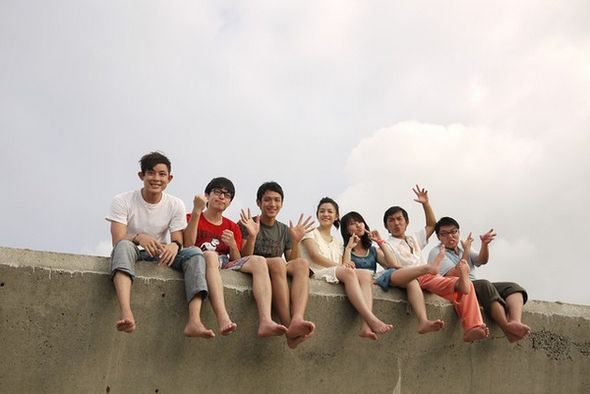
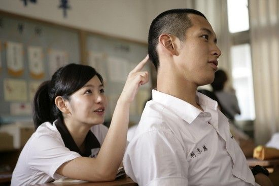
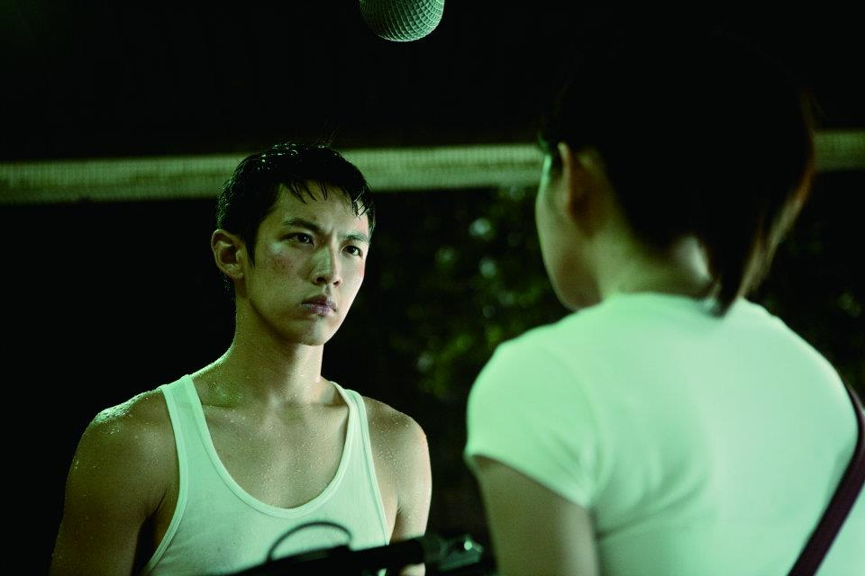
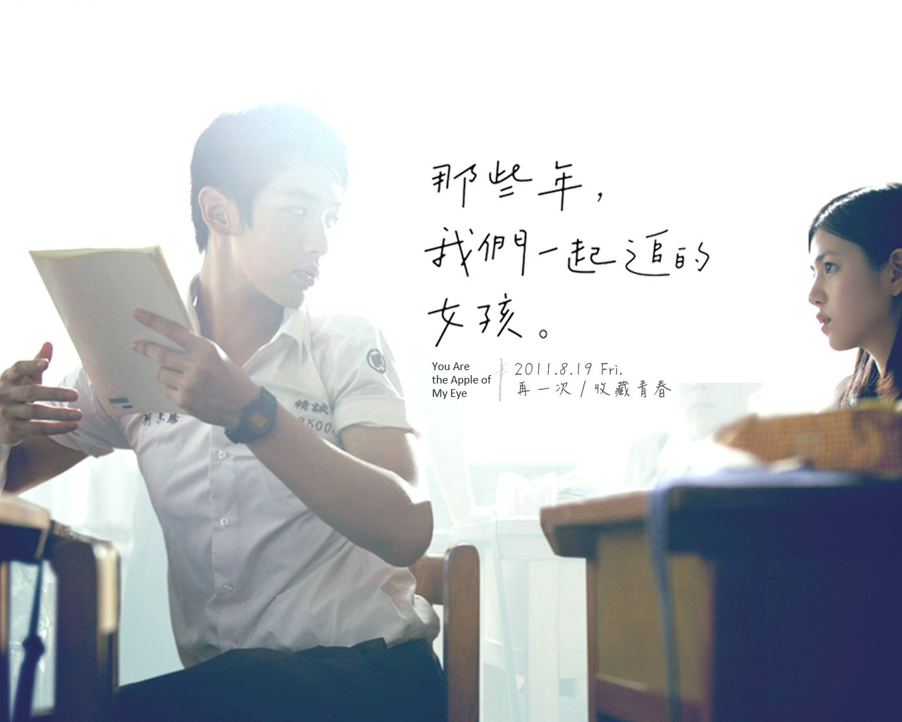

《那些年，我們一起追的女孩》（英語：You Are the Apple of My Eye）是一部於2011年上映的臺灣青春愛情片，劇情改編自臺灣作家九把刀撰寫的半自傳同名小說《那些年，我們一起追的女孩》，這部片也是九把刀首次執導的電影作品。
電影男主角為柯震東飾演、喜歡惡作劇的調皮學生柯景騰，女主角則是陳妍希飾演、受班上男生喜歡的優秀女學生沈佳宜，電影拍攝的地點大都選在彰化縣，主要場景包括九把刀母校彰化縣私立精誠高級中學，九把刀還創作電影主題曲《那些年》的歌詞，並交由日本作曲家木村充利作曲、歌手胡夏演唱，這首歌後來獲得許多民眾的喜愛，並在第48屆金馬獎被提名為最佳原創電影音樂。
故事設定在民國83年位於彰化縣的彰化縣私立精誠高級中學，故事圍繞著調皮的男主角柯景騰發展，他在這間學校裡還有幾個好友，包括喜歡耍帥但在情場常常失意的曹國勝、想用搞笑致勝卻總是失敗的廖英宏、體型偏胖但成績好的謝明和等人。他們的共同點是喜歡班上成績優秀、相貌甜美的女孩沈佳宜，在沈佳宜身旁則有閨密胡家瑋伴隨。
儘管柯景騰和沈佳宜在高中時是同學，但柯景騰因成績糟糕、而被視為「不受控制的問題學生」，對沈佳宜也沒有興趣。有一天柯景騰在課堂上自慰被發現，結果被老師懲罰更換坐位，改坐到沈佳宜前面。後來英文課時，柯景騰在發現沈佳宜沒帶英文課本後，決定把自己的課本偷偷交給她，並站起來告訴老師忘了攜帶課本，這讓他被老師痛罵並遭到體罰。沈佳宜因此被柯景騰感動。沈佳宜除了鼓勵柯景騰認真學習外，還說服他在課程結束後一同留下來複習功課。在輔導柯景騰的過程中，兩人感情慢慢地增溫，柯景騰的成績也逐漸拉高。
畢業後，柯景騰在大學聯合招生考試考上國立交通大學，而沈佳宜在大學聯合招生考試則因身體不適而表現失準，最後成績只能錄取國立臺北師範學院，為此她感到十分難過和沮喪。儘管兩人身隔兩地，柯景騰每天晚上都會排隊打公共電話關心失落的沈佳宜。同年聖誕節假期，柯景騰前往臺北探望沈佳宜，兩人展開他們第一次「約會」。但後來他們因為理念不同而大吵一架，最後在大雨中，兩人結束關係。
分手後的2年內，柯景騰和沈佳宜彼此都沒有接觸，直到921大地震那天，柯景騰立刻打電話給沈佳宜詢問狀況。在長時間的對談中，他們兩人感嘆沒有緣分能夠成為一對夫婦。之後兩人恢復友誼，儘管兩人未能夠成為戀人，不過友情卻進一步昇華而成為永遠的好友。2005年，沈佳宜突然透過電話告訴柯景騰說她要結婚了，在婚禮上所有的老朋友聚集在一起，並開玩笑地計畫讓沈佳宜的丈夫難堪，不過他們發現過去的情感已轉化成深厚的友誼和祝福。後來眾人聚在一起祝賀新郎和新娘，並開玩笑地說應該要能親吻新娘；沈佳宜的丈夫則說任何想親新娘的人，都要先和他親吻。柯景騰立刻抓住新郎熱烈地親吻，如同會如此親吻沈佳宜般；在親吻的過程，過去成長和懊惱的回憶也逐一浮現。
